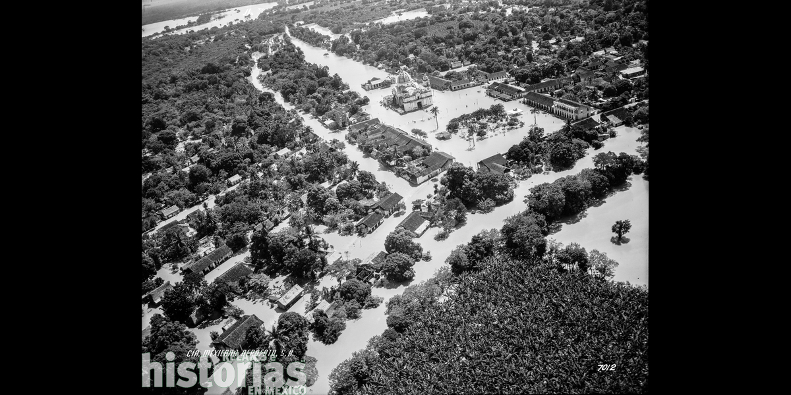

Es una comunidad perteneciente al municipio de San Juan Bautista Tuxtepec, ubicada en la region de la cuenca del Papaloapan. Uno de los principales sucesos que han azotado a la comunidad son las inundaciones ya que se encuentra muy cerca del río Papaloapan, a lo largo de los años ha sufrido diversas inundaciones, especialmente en temporada de lluvias y huracanes esto ha provocado daños en viviendas, cultivos y caminos, afectando la economía y la vida diaria de la comunidad. Lo que obligaba a los pobladores a salir de su hogar y abandonar sus pertenencias para resguardarse en comunidades cercanas donde las inundaciones no afectaran tanto.
Estos acontecimientos hicieron que los pobladores adoptaran nuevas formas para construir sus viviendas, construyendolas sobre grandes pilares de concreto para que los desbordamientos del río no afectara tanto sus hogares y provocar menos pérdidas materiales. Hoy en día solo queda una casa como esas, permitiendonos conocer como los pobladores tuvieron que adaptarse a las circunstancias devastadoras que ocurrian en la comunidad con la llegada de las lluvias.

Aunque estos sucesos heran devastadores y provocaban muchas pérdidas materiales, eventualmente era favorecedor para los cultivos ya que las tierras quedaban más fertiles gracias al desvordamiento del río, lo que ocasionaba que hubiera cosechas muy buenas y mejor calidad de la fruta.
Una de las inundaciones que más ha marcado a la comunidad y los alrededores es la inundacion de 1944, donde las lluvias intensas y prolongadas provocaron el desbordamiento del río inundando extensas zonas de los estados de Veracruz y Oaxaca. Muchas comunidades quedaron completamente bajo el agua durante días o incluso semanas, provocando la pérdida de muchas viviendas, pérdidas de cultivos, crisis económica y que muchas familias abandonaran sus hogares.
Esta inundación marcó un antes y después en la región, ya que debido a este suceso fue llevada a cabo la construcción de la presa Miguel Alemán, hubo más control de inundaciones y desarrollo agrícola y urbano.
Fuentes consultadas: https://elmuromx.org/2025/09/presentan-72-horas-de-angustia-memorias-de-la-inundacion-de-1944-en-tuxtepec/